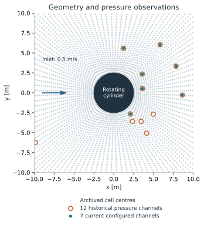
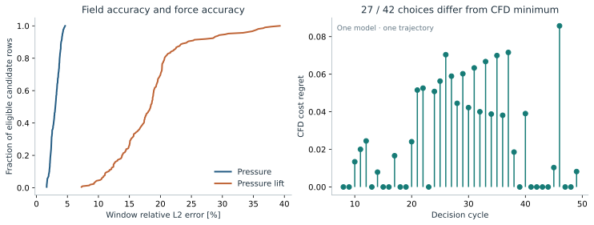
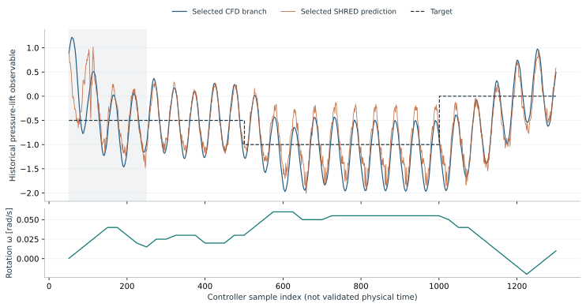
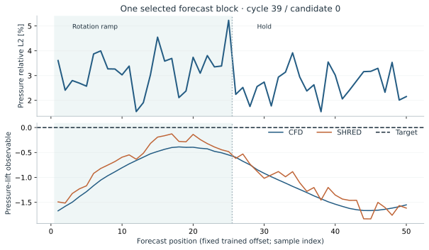

Investigating whether a shallow recurrent decoder can predict the pressure response to cylinder rotation—and preserve the information needed to choose a control action.
Andrea IngraoImplementation & experimentsResearch prototype · private review
01A traceable prediction. Actual archived fields at forecast position 25 of 50. July 2026 run, model training_000, simulation 0, cycle 39, selected candidate 0. The candidate follows a median-error selection rule. Provenance and metrics ↗
The research question
When does a good field prediction make a good control decision?
A controller needs to distinguish the consequences of candidate actions. Reconstructing a visually similar pressure field is only part of that task: pressure errors can have a different effect on a force observable and on the ranking of controls.
This project connects sparse sensing, a control-conditioned SHRED predictor and a finite-candidate MPC loop. It studies a rotating-cylinder numerical benchmark using OpenFOAM, with the scientific assumptions and limitations exposed alongside the results.
A conceptual diagram of the implemented algorithm. The predictor estimates pressure; candidate enumeration selects the action.

Cell-centre observations, not wall taps. Twelve historical pressure channels were recovered by exact array matching. Seven current configured channels form a subset. Geometry annotations use the present template; its exact July counterpart was not archived.
Sensing history + control
A fixed-offset forward predictor
Delayed pressure observations are paired with the proposed rotation history. The current model uses an LSTM, a shallow decoder and a compressed pressure representation. Forecast positions are part of one deployed prediction block.
Pressure → control objective
A deliberately named observable
The near-cylinder pressure ring gives a historical lift observable. It excludes viscous force and retains the original normalization. Candidate cost combines mean target error, temporal variation and rotation change.
Receding horizon
Apply a prefix, then observe again
Each candidate ramps for 25 samples and holds for another 25. The controller applies only the first 25 before the next decision. The archived evaluation compares five candidate endpoints at each checkpoint.
02 / Selected evidence
Field error and decision quality tell different stories.
One archived model. One partial control rollout. The summaries below use 210 eligible candidate evaluations from 42 decisions. They describe this archive; candidates are correlated, and their spread is not a confidence interval.
27 / 42Choices differ from the CFD minimumAmong five tested candidates per decision
Source: run_20260713_121325_067474, training_000, simulation 0; eligible cycles 8–49. Relative L2 = ‖prediction − reference‖₂ / ‖reference‖₂; these window denominators are not near zero. Definitions and absolute regret.

02Accurate pressure is not sufficient evidence of accurate control ranking. Median absolute CFD cost regret is 0.0193 in the stored objective’s units. Disagreement can occur between nearly tied candidates. No independent-controller superiority is claimed.

03Selected candidate-branch replay. Each of 50 decisions contributes its selected first 25 samples. All 49 available next-cycle pressure/control histories match. The pre-eligibility interval is shaded. Sample index is not asserted to be physical transient time.

Within one forecast. Cycle 39, candidate 0; target zero and rotation 0.05→0.04 rad/s. Shading distinguishes the 25-sample ramp. This is one fixed-offset model, not 50 separately trained lead times.
Real archive playback · 5 seconds
Follow the pressure forecast.
CFD, prediction and absolute error across all 50 positions of the same selected candidate. Color scales stay fixed. Playback speed is for viewing, not physical time.
A useful prototype. An explicit validation boundary.
01
Establish the physical plant
Current CFD templates specify steady-state iteration; October solver logs confirm SIMPLE mode. They do not establish time-accurate transient flow. Exact July solver dictionaries are missing.
02
Validate sensing and force
The pressure reference needs upstream information. Initial historical sensing/control/checkpoint alignment is unresolved. The near-wall pressure-ring observable needs comparison with wall and viscous forces.
03
Test independent decisions
The archive has one model and rollout, without an independent controller baseline. Matched temporal evaluation is implemented, but a completed scientific study across models and incoming states remains future work.
The slides’ 1,680-candidate figure is not backed by the retained CSVs. It is excluded from these results. Repeated training on fixed data is not described as online learning.
04 / Inspect & reproduce
Start with the evidence.
Regenerate the figures from a small real result sample, without OpenFOAM, a full dataset or model training. Metadata, selection rules and source hashes travel with the sample.
I developed the CFD/data workflow, the control-conditioned pressure predictor, MPC integration, experiment tooling and analysis.
Theoretical guidance
Matteo Tomasetto Prof. Andrea Manzoni
Project context: MOX, Politecnico di Milano. Roles and contribution statement confirmed by Andrea.
Built on SHRED and PySHRED, with upstream software credited separately. No institutional endorsement, formal coauthorship order or publication is implied.